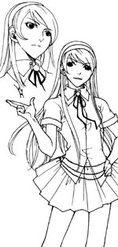
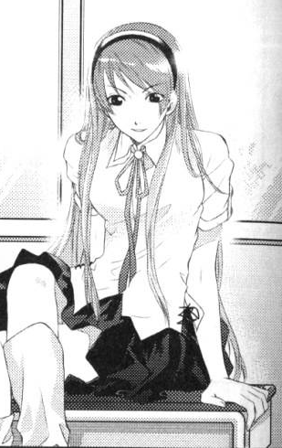

人设——欧萝妲·苏·凯文
欧萝妲·苏·凯文
性别：女
身高(cm)：170
年龄：16岁
外表：褐色眼睛与褐色长直发，发长到臀部，西方人面孔，有领导气息的沉稳女孩，穿着打扮都很有气质。
性格：班上大多数的人都很敬畏她喜好厌恶：喜好跟导师赌博、擅长事务，讨厌赌输。
种族：妖精贵族。
学院/阶级：Atlantis学院高中一年级C部班长（中学时期在A班）
身分：学生会会长，过往七大妖精王之一约里士的直系子孙
简介：
身为约里士的后人，除了家族本身会有着各式各样的基础训练之外，随着优秀血缘而来的是超乎常人的早熟能力。在国中短短两年，欧萝妲几乎已经将所有的学分给修全了，在指导老师的协助之下开始转往高阶课程进修。
原世界所谓的经济学对于欧萝妲就像是小小游戏一样，只需要快速看过一眼就有上百种破解方法出现在她脑海中。
因为学校没有禁止提前修学分，而是有能力做到哪就可以做到哪里，所以中学时期欧萝妲曾经想过，干脆直接跳级把学分都给修完快快离开算了。
千万不要和班长大人对赌，会输的很惨，这位可以通过骰子进杯子的顺序加上声音大小以及撞击声、还有摇杯子的角度力道，接着计算时间之后加以平均预测，得出相当精确的结果，即使是换成扑克牌也能推算出所有牌在谁手上、怎样的排列……
美丽聪明睿智的班长大人~~~~
【看你们那么好奇，我就把班长的样子摆出来给你们看看，随便介绍下这位妹子，不能继续出漫画真可惜，不能动漫化真可惜……】